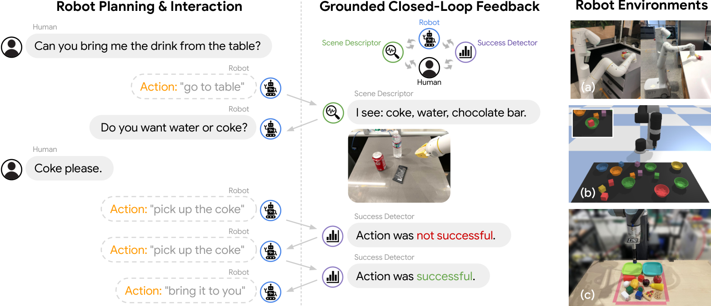

Inner Monologue
把“刚才到底发生了什么”写回上下文，计划才能随现实改变。
Inner Monologue: Embodied Reasoning through Planning with Language Models
有动作噪声的真实桌面任务：初始观测规划 20%，加入物体与成功反馈后平均 90%。
01这篇要解决什么？
普通 Agent 的工具报错通常很明确，机器人却可能“命令执行完了，但东西没抓到”。Inner Monologue 的贡献是把物理执行中的成功、场景变化和人类反馈变成规划器能使用的语言信息，从一次性规划走向执行中的调整。
02先看一个场景
真实桌面上的分类任务：把食物放进一只盘子、把调料放进另一只。抓放位置被人为注入了噪声，所以抓空是常态；还有物体一开始被别的东西挡着，没能进入最初的清单。如果规划只在开头看一眼世界、之后照计划念下去，抓空会被当成抓到，被挡住的瓶子会一直不存在。
03方法怎样运转？

- 01
先约定：规划器只能从已训练好的技能里选
论文设定机器人只会执行技能库里已有的短程策略，每条策略配一句语言描述，这些策略可以由强化学习或行为克隆得到。规划器是一个预训练语言模型，全程不微调，只用少样本提示。三个实验用的模型并不相同：仿真桌面与真实桌面用 InstructGPT-1.3B（由 GPT-3 经人类反馈微调而来，走 OpenAI API），厨房移动操作用 PaLM-540B。
- 02
每执行一步，就生成两类文本反馈
成功检测是一个二分类问题，回答刚才那条技能有没有做成；物体反馈回答此刻看见了什么。实现方式按环境而变：仿真里用真值物体位姿写的规则（抓放后二维距离小于 4 cm 且高度更高即算成功），真实桌面用现成的开放词表检测器 MDETR，既给物体列表，也用检测框中心与目标放置点的距离做成功判定（堆积木阈值 3 cm，分类任务 10 cm）。厨房里的成功检测是作者自己训练的：一个以 CLIP 图像与文本编码器为底、在遥操作演示与自主回放数据上用二元交叉熵训练的 foresight 模型，输入是首帧、末帧与技能文本，另配一个用对比损失训练的 hindsight 模型压低误报。
- 03
任务进度反馈把目标写成一张可勾选的清单
在仿真桌面的 Object + Scene 变体里，模型先按高层指令生成一串“[x] 在 [y] 上面”形式的子目标，之后每执行一次抓放，就用上面那个成功检测器逐条核对，把当前已满足的子目标列表追加回提示。作者还允许模型在清单之后写一句“Robot thought: …”作为思维链摘要，经验上更稳。这类反馈解决的是组合状态空间里“做到哪一步了”的问题，与单步成功检测回答的问题不同。
- 04
追加反馈重新生成，直到模型不再写出新步骤
反馈以文本形式拼回提示，下一轮模型同时看到原指令、动作历史与最新反馈，于是可以重试、换步骤或处理刚露出来的物体。终止条件是模型停止生成新步骤，仿真里另设了最多 15 步的上限。厨房实验额外接入 SayCan 的价值函数为动作打可执行性分，但论文注明这些价值函数只影响选择、不把信息回传给语言模型；主动场景描述这一支则允许模型自己提问，由人作答。
prompt = 少量示例 + 指令 + 初始物体列表 # 语言模型不微调
history = ""
for t in range(15): # 仿真里步数上限为 15
step = LLM(prompt + history) # 生成模式，直接写出下一句动作
if step is empty: break # 终止条件：模型不再写新步骤
execute(policy(step)) # 已训练好的低层策略，此刻不更新
ok = success_detector(o_before, o_after, step)
# 仿真=真值规则 / 真实桌面=MDETR 检测框距离 / 厨房=作者微调的 CLIP
objs = object_feedback(o_after) # MDETR、ViLD 或人工报读
done = [g for g in subgoals if check(g, o_after)] # 仅任务进度反馈使用
history += "\nSuccess: " + ok + "\nScene: " + objs + ", 已完成 " + done方法与结果的原文定位见本页引用。
04跟着这个场景走一遍
教学推演：回到上面的场景。第一步，候选动作来自那一条已经写好的抓放策略，规划器是不微调的 InstructGPT-1.3B，提示里只有少量示例和初始物体列表。第二步，第一次去抓水果抓空了，MDETR 重新检测当前画面，把检测框中心与原定放置点比对，距离超过 10 cm，于是成功检测返回失败；如果只记下“已执行 pick”，规划就会带着一个空盘子进入下一项。第三步，物体反馈同时刷新两份清单——当前可见物体，以及已经成功移入盘中的物体；仿真变体里对应的是那张按“[x] 在 [y] 上面”写成的子目标清单。第四步，这些文本拼回提示后重新生成：模型看到失败便重试抓取，看到清单里多出一个刚被水果遮住、现在才检测到的瓶子，就把它补进后续计划，直到清单填满、模型不再写出新步骤。整个过程里低层策略一次都没有更新，变化的只有提示里的文字；而反馈本身也会出错——附录 Table 5 显示 ViLD 在厨房场景仍有 28.0% 的漏检，错误的成功检测会让规划器把没做成的事当成做成了。另外，这套反馈只能把世界描述成一句句自然语言，“把积木等间距排成一条对角线”这种需要精确计算的目标写不进去，下一篇 Code as Policies 换掉的正是这个中间表示。
05实验到底表现怎样？
真实桌面实验使用 UR5e、RGB-D、MDETR 物体识别及脚本化抓放；为检验恢复能力，动作加入标准差 4 mm、截断于 2σ 的噪声。表 2 涉及续堆积木和水果 / 瓶子分类，每项 10 次。
作者报告的实验结果 · v1
| 反馈配置 | 两项真实桌面任务平均成功率 |
|---|---|
| 只在开始识别物体的开环 LLM | 20% |
| 持续物体反馈 | 45% |
| 仅成功反馈 | 40% |
| 持续物体 + 成功反馈 | 90% |
原始证据：反馈机制：§3 ↗ · 桌面实验：§4.2 / 表 2 ↗ · 厨房实验：§4.3 / 表 3 ↗
闭环反馈的收益在失败恢复场景最明显；90% 是两个小规模桌面任务的平均值。另一个厨房移动操作实验中，表 3 的总体成功率为 SayCan 30.8%、完整反馈 60.4%，不能与桌面实验合并计算。
06收益来自哪里，又停在哪里？
消融与机制证据
只保留物体或成功反馈都明显弱于两者结合。论文将相应失败联系到遮挡造成的漏对象和动作失败后不重试；这比只比较“有 / 无 agent”更能解释机制。
结论的适用边界
反馈质量决定闭环质量，而反馈来自哪里必须逐项拆开看。模型来源是混合的：语言侧完全是现成的通用模型，仿真与真实桌面用 InstructGPT-1.3B、厨房用 PaLM-540B，都不为机器人微调，可以替换；机器人侧则是作者的前提成本——仿真的低层抓放策略是一个以 CLIP 为底的 Transporter Net，用 20000 条演示训练，厨房的技能策略与价值函数沿用 SayCan。反馈模块同样混杂：仿真的成功检测与物体列表直接读仿真器真值，真实桌面靠现成的 MDETR 加几何启发式，厨房的成功检测是作者微调的 CLIP（foresight 加 hindsight 两个模型），而厨房的物体反馈由人工提供，附录 Table 5 才评估了把它换成 ViLD 或 MDETR 的可行性，ViLD 仍有 28.0% 的漏检。因此不能把所有反馈都理解成全自动视觉感知，也不能把一次成功检测当成真值。
07放回全书的脉络
往后读 PhyAgentOS 时关注同一个问题如何变成明确的验收协议；读 ASPIRE 时看反馈如何从一句“失败了”细化到具体 API 的执行证据。
08把阅读变成一个小研究
在已有工具 Agent 中加入“假成功”：工具返回正常，但状态没有改变。比较只读返回码、读最终状态、同时读前后状态的三种判断。
先自己回答：这项实验怎样才有解释力？
能形成记忆点的是反馈的内容，而不是反馈的长度。最好报告误接受率、漏检率和恢复额外调用数，避免靠无限重试把验证器的问题藏起来。
- 用自己的话说出这篇改变了哪个模块。
- 画出它的输入、输出和一次失败如何被处理。
- 复述一个结果，同时说清基线、指标与实验条件。这一问不给答案，材料在第 05 节。
先自己答，再看前两问的参考答案
这篇改了哪个模块这篇的改动落在运行时与上下文管理这一层：在原有的高层规划与原有的低层技能之间新开一条回传通路，把每一步执行后的证据翻成文本重新拼进提示，规划因此从一次性生成变成边做边改。它没有换世界的表示，反馈仍旧是一句句自然语言；也没有换动作的出口，候选仍是技能库里已有的短程策略。语言模型全程少样本提示、不微调，低层策略在闭环里一次都不更新，真正被改写的只有提示里的文字。
输入、输出与一次失败如何被处理输入侧，模型看到的全是文本——任务指令、少样本示例、初始物体列表，以及每执行一步后追加的成功反馈、物体反馈与任务进度清单；图像并不进模型，而是先由外部模块消化成文字，仿真读真值规则，真实桌面用 MDETR，厨房用作者微调的 CLIP，厨房的物体反馈甚至由人工报读。输出是一句技能描述，也就是下一步做什么，交给技能库里对应的已训练好的低层策略去执行，终止条件是模型不再写出新步骤。失败处理这条通路是有的：由成功检测器判定刚才那条技能有没有做成，依据是执行前后的观测，真实桌面比的是 MDETR 检测框中心与目标放置点的距离，结论以一句文本追加回提示，模型据此重试同一步、换一步，或把刚刚露出来的物体补进后续计划。需要留住的是这条通路的可靠性完全取决于反馈模块，成功检测本身会误判，附录里 ViLD 在厨房仍有 28.0% 的漏检。
把“刚才到底发生了什么”写回上下文，计划才能随现实改变。
↗带着位置回到原文
首发日期用于时间排序；以下方法与结果对应 v1。数据为论文作者报告，本讲义没有独立复现实验。
QA就这一页提问或讨论
对某个数字、某条边界或某个推演有疑问，欢迎直接留言：讨论按页面分开，回复会保留在 XinrunXu/awesome-agentic-robotics-papers 的 Discussions 里，需要一个 GitHub 账号。